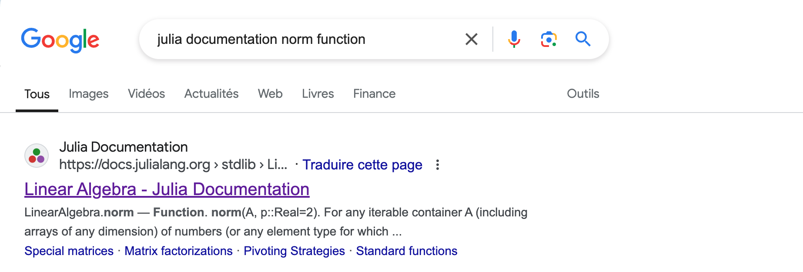
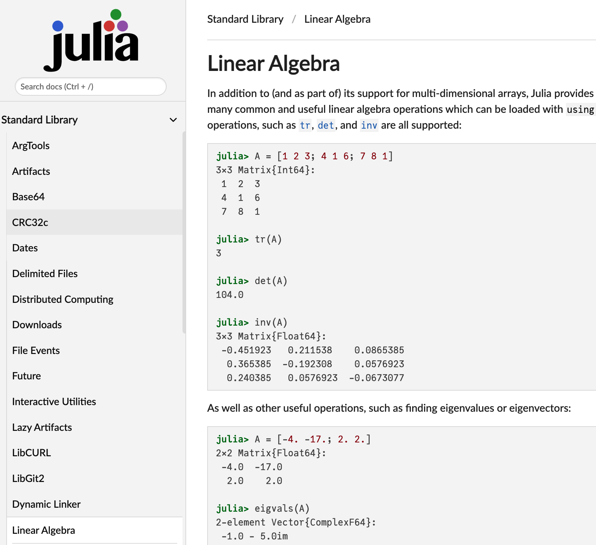
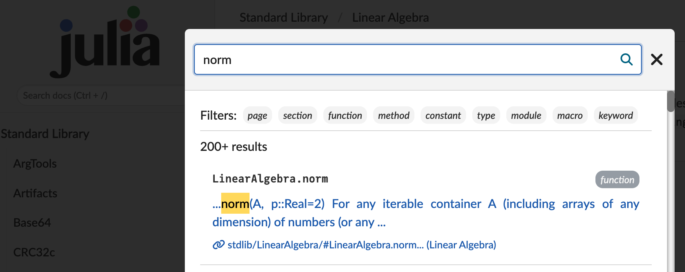
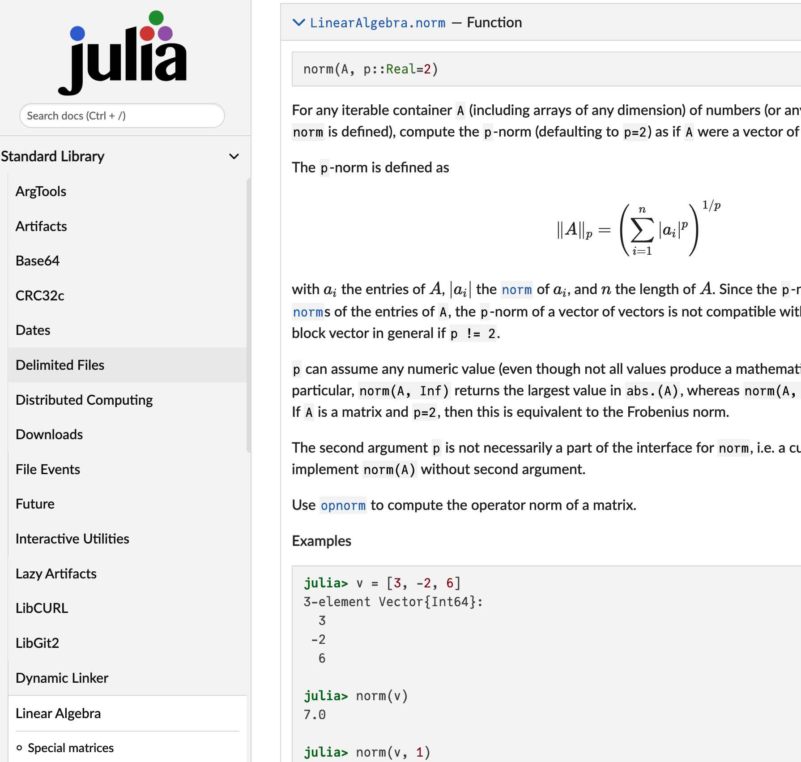

_
_ _ _(_)_ | Documentation: https://docs.julialang.org
(_) | (_) (_) |
_ _ _| |_ __ _ | Type "?" for help, "]?" for Pkg help.
| | | | | | |/ _` | |
| | |_| | | | (_| | | Version 1.11.6 (2025-07-09)
_/ |\__'_|_|_|\__'_| | Official https://julialang.org/ release
|__/ |
julia>Getting Started with Julia
This page is designed to help you with the installation process. You’ll learn how to install Julia on different operating systems and how to verify the installation. It also covers using the Julia REPL for interactive coding. Additionally, this page provides resources for learning and getting help with Julia based on the official documentation.
Installing Julia
Download Julia
To get started with Julia, you first need to install the language on your computer. The official Julia website provides the installation files for various operating systems, including Windows, macOS, and Linux. Follow these steps:
- Visit the official Julia Downloads page.
- Choose the appropriate version of Julia for your operating system.
- Download the installer (the latest stable version is recommended for most users).
Installation Instructions
Before you can start using Julia, you need to install it on your system. Below are the steps for installing Julia on different operating systems: Mac, Linux, and Windows.
To install the latest stable version of Julia on Mac or Linux, follow these simple steps:
- Open your terminal.
- Run the following command to download and install Julia:
curl -fsSL https://install.julialang.org | shThis command downloads the Julia installation script and runs it automatically. It will install Julia and place it in your /usr/local/bin directory by default.
To install Julia on Windows, follow these steps:
- Open the Microsoft Store page for Julia.
- Click “Get” to download and install the latest version of Julia from the Microsoft Store.
Alternatively, you can install Julia using the Windows Package Manager (winget). Open the command prompt and run the following command:
winget install julia -s msstoreAfter installation, you can launch Julia by searching for it in the Start menu or by running julia in the command prompt.
Verify Installation
After installation, you can verify that Julia is correctly installed by opening a terminal or command prompt and typing the following command:
juliaThis will launch the Julia REPL (Read-Eval-Print Loop), where you can start running Julia commands interactively. You should see something similar to the following:
If you see this prompt, it means Julia is installed and working correctly!
Using the Julia REPL
The Julia REPL (Read-Eval-Print Loop) is an interactive command-line environment for executing Julia code. It allows you to run Julia code line-by-line, evaluate expressions, and see the results immediately.
You have already used it when checking the installation of Julia by typing julia in a terminal or command prompt. Let us start typing Julia expressions.
Basic Commands
In the REPL, you can type expressions and commands. For example:
- To perform a simple arithmetic operation, type:
3 + 4The result will appear right below the command, like so:
7- To assign a value to a variable, use the
=sign:
x = 10Now, x holds the value 10. You can use it in further expressions:
x * 2The result will be:
20Using REPL Features
The Julia REPL has several features that make it more convenient to use:
History: You can use the up and down arrow keys to scroll through your command history and reuse previous commands.
Tab Completion: Type part of a function or variable name and press
Tabto automatically complete it or show suggestions.Help: Type
?followed by a function or type name to get documentation directly in the REPL. For example:
?sumThis will show information about the sum function.
- Exiting the REPL: To exit the REPL, simply type:
exit()Or press Ctrl-D (on most systems).
REPL Modes
The Julia REPL has different prompt modes that can be very useful to install / remove packages (libraries), run shell commands, search for help, etc. The different modes are:
- The Julia mode
- Help mode
- Package mode
- Shell mode
Visit the command-line REPL page for more details.
By pressing ? you can obtain information and metadata about Julia objects (functions, types, etc.) or unicode symbols. The query fetches the docstring of the object, which explains how to use it.
help?> printlnIf you don’t know the exact name you are looking for, type a word surrounded by quotes to see in which docstrings it pops up. To come back to Julia mode, hit backspace.
By pressing ] you access Pkg.jl, Julia’s integrated package manager. Please visit the documentation for details. Pkg.jl allows you to:
]activatedifferent local, shared or temporary environments;]instantiatethem by downloading the necessary packages;]add,]update(or]up) and]remove(or]rm) packages;- get the
]status(or]st) of your current environment.
As an illustration, we download the package Plots.jl inside our current environment:
pkg> add PlotsNote that you can do the same in Julia mode:
julia> using Pkg
julia> Pkg.rm("Plots")The package mode itself also has a help mode, accessed with ?. To come back to Julia mode, hit backspace.
By pressing ; you enter a terminal, where you can execute any command you want. Here’s an example for Unix systems:
shell> pwdTo come back to Julia mode, hit backspace.
Julia Documentation
One of the key strengths of Julia is its comprehensive and easy-to-navigate documentation. Julia’s official documentation provides detailed explanations of the language features, standard libraries, and tools available for developers.
Official Documentation
The official Julia documentation is a complete reference guide for the language. You can find it here:
This documentation covers everything from basic syntax to advanced topics like parallel computing and package management.
Example. Search how to compute the norm of a vector.

The norm function comes from the standard librairy LinearAlgebra.

However, we are not directly at the right place, so I recommend to use the Search docs field.

And now, we have the documentation.

Note
You can also access the Julia documentation directly from the Julia REPL using the ? (help) command.
Accessing Help in the REPL
The REPL provides a built-in help system that can assist you in looking up functions, types, and more. Here’s how you can use it:
Look up a function or keyword: Type
?followed by the function name or keyword you want help with.?printlnThis will display the documentation for the
printlnfunction.Search for a keyword: You can also type just
?followed by a search term to find relevant functions or types in the documentation.?arrayThis will display documentation related to arrays in Julia.
Additional Resources
- Julia Language GitHub: Julia GitHub Repository — Contains the source code and development discussion.
- Julia Discourse: Julia Discourse Forum — A community forum where you can ask questions, share ideas, and discuss Julia-related topics.
- JuliaLang Slack: Join Slack Community — An official Slack workspace for the Julia community.
- Julia Community: Julia Community — A hub for Julia community resources, including events, blogs, and videos.